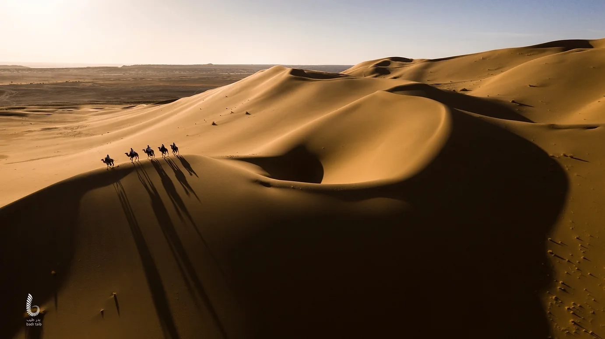

Heritage
تجربة التاريخ والآثار
لبدة، صبراتة، شحات، غدامس، وأكاكوس في مسار واحد للحضارات.
زيارة ليبيا تمنحك فرصة لاكتشاف مزيج من التاريخ، الثقافة، الطبيعة، المغامرة، والضيافة. من المدن القديمة إلى الصحراء، ومن المطبخ المحلي إلى الفروسية الشعبية، تقدم ليبيا تجربة متنوعة لا تُنسى.
لبدة، صبراتة، شحات، غدامس، وأكاكوس في مسار واحد للحضارات.

الكثبان الرملية، البحيرات الصحراوية، الواحات، الفن الصخري، التخييم، ومشاهدة النجوم.

غابات وشواطئ ووديان وآثار في مساحة واحدة، من شحات إلى رأس الهلال ووادي الكوف.

الفروسية، الممارسات الشعبية، اللباس التقليدي، الحرف، والمهرجانات.

البازين، الكسكسي، العصيدة، العصبان، المبكبكة، المقروض، ورشتة البرمة.

الفخار، الصناعات التقليدية، الأسواق القديمة، والأدوات التراثية.

الشواطئ الليبية، سوسة، رأس الهلال، الأثرون، وشواطئ طرابلس وصبراتة.

واو الناموس، الكهوف، التكوينات الصخرية، الكثبان، والحدائق الجيولوجية.
هذه المسارات مبدئية للتخطيط السياحي وتحتاج إلى تنظيم واعتماد من الجهات المختصة ومنظمي الرحلات عند الإطلاق الرسمي.
طرابلس → لبدة → صبراتة → شحات
بنغازي → البيضاء → شحات → سوسة → رأس الهلال
سبها → أوباري → غات → أكاكوس
سبها → واو الناموس → الهاروج → أوباري
طرابلس → غريان → جبل نفوسة → غدامس
سبها → هون → ودان → أوباري → غات